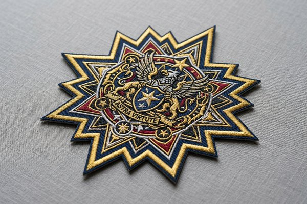

Patch Border Options Explained: Merrowed vs Heat-Cut vs Laser-Cut
The edge border of a custom patch is far more than decorative trim—it dictates the physical durability, anti-fray resilience, shape compatibility, and sewing ease of your emblem. In this comprehensive design guide, explore the differences between traditional merrowed borders, modern laser-cut edges, and smooth heat-cut satin borders to choose the ideal edge finishing for your next custom patch project.

1. Why Patch Border Options Matter: Functionality, Aesthetics & Longevity
When designing custom embroidered, woven, or printed patches, most creators focus primarily on center graphics, typography, and thread colors. However, the choice of patch border options is equally vital to the structural integrity and aesthetic presentation of the finished emblem.
The border serves three critical engineering functions in patch manufacturing:
- Anti-Fray Protection: Patch base fabrics—such as poly-cotton twill or woven polyester—naturally unravel when exposed to friction, laundering, and outdoor wear. A sealed border binds all fabric strands permanently.
- Visual Framing & Contrast: A well-chosen border color creates visual separation between the patch artwork and the garment surface, making logos stand out cleanly on both light and dark apparel.
- Attachment Structural Support: Whether your patch uses a heat-seal iron-on backing, Velcro hook-and-loop backing, or traditional sew-on edge channels, the border provides the heavy-duty foundation needed for secure fastening.
2. What Is a Merrowed Border? (The Classic Overlock Edge)
A merrowed border (also termed an overlock or overedge border) is the most traditional and recognizable patch finishing in the global embroidery industry. Named after the Merrow Machine Company that pioneered the overlock stitch in the 1830s, this technique employs a specialized overlock sewing machine that wraps heavy-gauge thread continuously around the outer edge of the patch.
Key Characteristics of Merrowed Borders:
- 3D Rounded Heavy Edge: Creates a substantial, rounded 3mm to 4mm thick border that fully encases the fabric edge on both the front and back of the patch.
- Maximum Fray Resistance: Provides the highest physical protection against unraveling during aggressive machine washing, sports abrasion, and outdoor workwear usage.
- Vintage & Authentic Aesthetic: Delivers the classic retro military and scouting look that consumers intuitively associate with premium heirloom badges.
- Strict Geometric Shape Limitations: Because the specialized merrowing sewing head must run continuously around the perimeter, merrowed borders can only be applied to regular geometric shapes: circles, squares, rectangles, ovals, and standard triangles. It cannot navigate sharp concave angles, inward curves, or freeform silhouettes.
3. What Is a Laser-Cut Border? (Precision Satin Stitch for Complex Shapes)
As modern branding increasingly embraces custom silhouettes, brand mascot outlines, and complex tactical shapes, laser-cut borders (also known as die-cut borders or satin-stitch borders) have become the modern manufacturing standard for intricate emblems.

How Laser-Cut Borders are Manufactured:
Unlike merrowing, which occurs after the patch is cut out, laser-cut borders are embroidered first while the fabric is securely clamped in the automated embroidery machine. The machine stitches a dense satin stitch border (typically 2.0mm to 2.5mm wide) along the exact vector contour of the artwork. Afterward, an optical high-precision computer-guided laser cuts along the outer edge of the satin stitches with microscopic accuracy (within 0.1mm), simultaneously melting the synthetic polyester fibers to prevent fraying.
Key Advantages of Laser-Cut Borders:
- Unlimited Silhouette Freedom: Handles sharp acute angles, star points, lightning bolts, animal silhouettes, and intricate concave curves effortlessly.
- Flatter, Sleeker Profile: Sits closer to the apparel fabric without the bulky raised bead of an overlock stitch, making it ideal for caps and lightweight sportswear.
- Internal Cutout Capability: Capable of creating inner hollow cutouts (such as doughnut holes or negative space between character limbs).
4. What Is a Heat-Cut Border? (Smooth Thermal Sealed Edges)
A heat-cut border relies on a fine heated wire blade, ultrasonic cutting tool, or thermal trimming knife to cut and seal the patch perimeter simultaneously. The thermal blade melts the synthetic thermoplastic fibers of the backing twill and embroidery thread, forming a smooth, sealed edge with minimal visible border width.
When to Choose Heat-Cut Borders:
- Minimalist Frameless Designs: If your design requires graphics or background color to bleed directly off the edge without a visible thick framing line.
- Micro Woven Badges: Standard for ultra-thin woven damask patches, neck labels, and sleeve cuff tags where bulk must be eliminated.
- Small Patches (Under 2 Inches): A 3mm merrowed border consumes 6mm of total canvas width; for a 1.5-inch patch, a heat-cut or narrow satin border preserves maximum usable illustration space.
5. Border Comparison Matrix: Merrowed vs. Laser-Cut vs. Heat-Cut
Compare the key technical parameters and design constraints across all three major custom patch border options:
| Feature / Parameter | Merrowed Border | Laser-Cut Satin Border | Heat-Cut Sealed Border |
|---|---|---|---|
| Border Thickness / Width | 3.0mm – 4.0mm (Raised 3D Bead) | 2.0mm – 2.5mm (Flat Satin Stitch) | 1.0mm – 1.5mm (Ultra-Thin Flush) |
| Supported Patch Shapes | Regular Geometric (Circle, Square, Oval, Shield) | Any Shape (Die-cut, Star, Freeform Contours) | Geometric & Moderate Contours |
| Anti-Fray Longevity | Maximum (Encapsulates Edges 360°) | High (Thermal Laser Melt + Satin Lock) | Moderate to High (Thermal Seal) |
| Visual Style & Hand-Feel | Classic Vintage, Traditional Heavy Emblem | Crisp, Modern, Precision Tactical Finish | Low-Profile, Frameless, Contemporary |
| Best Application Gear | Biker Vests, Scout Uniforms, Workwear Jackets | Baseball Caps, Tactical Backpacks, Streetwear | T-Shirt Cuffs, Beanies, Activewear Tops |
6. Matching Borders with Patch Shapes & Apparel Placement
Selecting the optimal border requires pairing garment functionality with aesthetic intent:
When to Choose a Merrowed Border:
- Standard Shape Corporate & Club Badges: Circles, rectangles, and rounded shields benefit from the framing polish of a merrowed overlock edge.
- Heavy-Duty Outerwear & Uniforms: Denim jackets, canvas work coats, and law enforcement uniforms that face harsh laundry conditions require the indestructible edge of a merrowed stitch.
- Sew-On Patches: The pronounced 3D channel of a merrowed border provides a convenient, visible guide groove for manual or machine needle stitching without touching the inner artwork.
When to Choose a Laser-Cut Border:
- Custom Silhouette Outlines: Animal mascots, brand acronyms, skull crests, or flame contours with sharp angles cannot be merrowed and must use laser cutting.
- Baseball Caps & Headwear: The curved crown of a hat favors a flatter laser-cut edge that flexes naturally across fabric seams without buckling.
- Hook-and-Loop Velcro Tactical Patches: Laser-cut satin borders pair seamlessly with male Velcro backing, ensuring zero overhang or thread snagging during rapid gear attachment.
7. Safe Margins & Bleed Guidelines for Designers
When preparing vector artwork (.AI, .EPS, .PDF) for factory digitizing at ChinaPatchFactory, keep these spatial layout rules in mind:
- Merrowed Safe Margin: Allow at least 4.0mm (0.16 inches) of breathing room between the inner edge of the merrowed border and any critical graphic elements or text. Because merrowing wraps over the edge, tight text will get partially sewn over.
- Laser-Cut Safe Margin: Maintain a minimum 2.5mm (0.10 inches) margin between typography and the outer satin contour line.
- Border Color Coordination: The border thread color can match the background twill for an invisible blended edge, or contrast sharply with a bold metallic or bright accent color to emphasize the emblem silhouette.
Pro Tip: The Cap Crown Rule
For custom patches intended for 6-panel baseball caps, always select a laser-cut satin stitch border over a thick merrowed border. The flatter laser-cut profile bonds smoothly across the stiff center crown seam with zero puckering.
8. Pre-Flight Border Selection Checklist for Designers
Review this 6-point checklist before submitting your patch design to ChinaPatchFactory for quote review:
- ✔️ Check Shape Geometry: Verify whether your design is a standard geometric shape (eligible for merrowing) or a complex contour (requires laser cutting).
- ✔️ Verify Margin Clearance: Ensure all text letters and fine details are at least 3mm–4mm away from the outer perimeter line.
- ✔️ Define Border Thread Color: Explicitly designate the border thread Pantone PMS color code in your artwork proof.
- ✔️ Match Backing Compatibility: Coordinate border choice with attachment style (e.g., laser-cut satin for Velcro tactical backing).
- ✔️ Evaluate Garment Fabric Weight: Pair heavy merrowed borders with heavy canvas/denim; select lightweight heat-cut borders for thin athletic apparel.
- ✔️ Inspect Free 12-Hour Digital Proof: Carefully examine the high-resolution border simulation rendered by our digitizers before approving mass production.
Frequently Asked Questions (FAQ)
Q1: Is there a price difference between merrowed and laser-cut borders?
At ChinaPatchFactory, standard merrowed borders on regular geometric shapes (circles, squares, rectangles) are included in our base wholesale prices with no extra charge. Laser-cut borders for complex custom die-cut contours require computerized laser calibration and may carry a very minor setup adjustment for intricate shapes, while standard laser borders on regular shapes remain highly cost-effective.
Q2: Can a shield-shaped patch have a merrowed border?
Yes! Standard heraldic shields with gentle curved sides and a rounded or moderately pointed bottom tip can be merrowed on our specialized overlock machines. However, if the shield features sharp acute internal notches or complex stepped corners, a laser-cut satin border is required.
Q3: Which border is best for iron-on heat-seal patches?
Both borders work well with heat-seal backings. However, laser-cut borders allow the thermo-adhesive film to bond completely flat right up to the outermost perimeter, providing slightly better edge adhesion on thin cotton fabrics than the raised bead of a merrowed border.
Q4: Why does a merrowed border have a small thread tail on the back?
Because merrowing is a continuous overlock loop stitch, finishing the circle requires locking the start and end threads together. At ChinaPatchFactory, our craftsmen trim and heat-seal this thread tail flat against the backing so it never unravels or shows from the front.
Q5: Can I change the border color to differ from the background?
Absolutely! You can choose any thread color from our 400+ stock shades for your border. High-contrast border pairings (such as gold metallic thread around navy twill, or bright red around black twill) are among the most popular design choices.
Conclusion & Free Digitizing Proof Advice
Selecting the right border option elevates a good patch into an exceptional piece of branded merchandise. Whether you choose the timeless, rugged durability of a traditional 3-thread merrowed border or the surgical contour precision of a computer-guided laser-cut edge, ChinaPatchFactory guarantees flawless edge execution.
Unsure which border option best suits your artwork? Upload your logo file today. Our master digitizers will evaluate your design, recommend the optimal edge finishing, and supply a 100% free digital proof within 12 hours!
Ready to Choose the Perfect Border for Your Custom Patches?
Upload your logo or artwork concepts today. Our expert digitizers will recommend the ideal border finishing, provide a free 12-hour proof, and quote competitive factory-direct pricing with no minimum order!
Get Free Quote